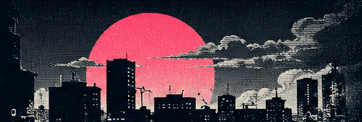

RECIN DEVELOPMENTCH. 01
S.A. TV / BROADCASTING FROM 199X
放送中のプログラムGAMES / VR / PLAYTESTS / DEVLOGS
 ホースレーサーHORSE RACER / S.A.TV
ホースレーサーHORSE RACER / S.A.TV
Horse-racing simulator with cinematic direction and reproducible outcomes.
VIEW ON ITCH.IOVR experiments in development: action, exploration, combat and digital worlds.
EXPLORE VR LABCH. 01 / ACTION
Retrofuturist action, tactical combat and anime spectacle.
EXPLORE PROGRAMNo-holds-barred action, arcade spirit, and new worlds in virtual reality. This is where we show the games as we build them.
S.A. TV / EXPERIMENTAL SIGNAL
Experiences in development. Public playtests will be announced here.
Dual pistols, supernatural powers and enemy waves through gothic rooms.
R&D / NOT RELEASEDVIEW GAMEPLAY & MECHANICS ↗Digital worlds, virtual partners, and shared exploration.
R&D / NOT RELEASEDImmersive exploration and routes powered by cycling.
R&D / NOT RELEASEDPhysical martial arts combat and spectacular superpowers.
CONCEPT / NOT RELEASEDThese titles are experimental projects, not announced commercial releases. Visual elements here are studio branding, not prototype gameplay.

Shampoo Arcade is an independent studio making action games, replayable arcades and VR experiences. S.A. TV is our signal: updates, real gameplay, experiments and upcoming playtests.
CHANNEL 01 / STAY TUNED
Gameplay, updates and news when new playtests become available.